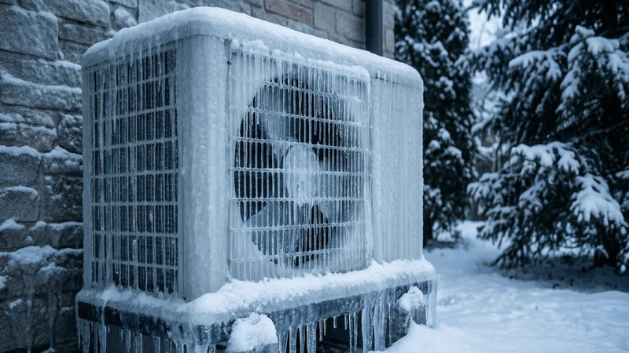

I got a call from a woman named Laura a few winters ago. She owned a 1925 bungalow in Denver’s historic district. Charming house. Original wood floors, built‑in bookshelves, a little front porch with a swing. She loved it. What she didn’t love was her winter heating bill. December: $380. January: $420. February: $450. Her thermostat was set at 68 during the day and 62 at night. She wore sweaters inside. She had space heaters in the bedrooms. Still, her furnace ran almost constantly.
I did an energy audit. The blower door test was a disaster. At 50 pascals of pressure, the house was leaking like a sieve. The equivalent of leaving a window open all winter. But the real surprise came when I opened the attic hatch. There was no insulation. None. I could see the lath and plaster ceiling from above. Just bare wood and dust. Then I checked the walls. I drilled a small hole in the dining room and stuck a borescope in. Empty. No insulation in the exterior walls either. The house was built in 1925. Back then, nobody insulated. They just built double‑brick walls and hoped for the best.
Laura had lived in the house for six years. She told me she thought the high bills were normal for an old house. She didn’t know that the house had no insulation. The previous owner hadn’t disclosed it. Her home inspector didn’t check the attic because there was no pull‑down ladder. It was just a hatch in a closet. Nobody had looked up there since the 1980s.
I did a thermal scan. On a cold morning, the walls glowed orange on the camera. Heat was pouring out of every exterior surface. The ceiling was even worse. The attic was cold, so the ceiling was cold, and the warm air from the house was rising and escaping through every gap around light fixtures and the attic hatch. It was a thermodynamic nightmare.
Now, before I get into what we did, I want to stop here and point something out. High heating bills in old houses almost never have a single cause. It’s usually a combination of air leaks, missing insulation, and inefficient equipment. Laura’s case was extreme because the attic was completely bare. But even if your attic has some insulation, it might not be enough. The U.S. Department of Energy divides the country into climate zones. Denver is in Zone 5, which recommends attic insulation of R‑49 to R‑60. That’s about 16 to 20 inches of fiberglass or 12 to 15 inches of cellulose. Most old houses have less than R‑20.
So here’s what we did. First, we sealed every gap in the attic floor. Cans of spray foam around wire penetrations, plumbing stacks, and the attic hatch. We built a plywood box to cover the hatch and insulated it with rigid foam. That alone made a noticeable difference. Then we blew in cellulose insulation to a depth of 12 inches, about R‑38. The blower machine was loud. The attic was dusty. But after six hours, the job was done. Laura’s attic went from bare wood to a blanket of gray fluff.
We didn’t do the walls because of the cost. That would have meant drilling holes between every stud, blowing insulation in, then patching and painting. The estimate was about $4,500. Laura decided to wait on that. The attic work cost about $1,800.
After the repair, I asked Laura to track her gas usage for a few months. Her furnace is an 80% efficient natural gas unit. Before the fix, she was using about 1,200 therms per year, mostly in winter, at about $1.20 per therm. That’s $1,440 annually. After insulation, her usage dropped to 720 therms. That’s an annual saving of $864. The attic job paid for itself in just over two years.
HVAC Analyzer
Compare SEER ratings and upgrade payback
All data stays in your browserBut here’s the part that surprised both of us. Her furnace now runs less often, so it’s quieter. The upstairs bedrooms, which used to be drafty, now stay warm. She stopped using space heaters entirely. Her comfort improved as much as her bill.
I’ve seen this pattern in dozens of old homes. People think they need a new furnace or new windows. Sometimes they do. But often, the attic is the real problem. Hot air rises. If your attic isn’t insulated, your furnace is heating the sky. And if your attic floor has holes — around light fixtures, plumbing stacks, the chimney — warm air is flowing right past the insulation even if you have some.
A quick test you can do yourself on a cold day: put your hand near a light fixture on the ceiling. If you feel cold air coming down, that’s the stack effect pulling warm air up into the attic and cold air down into your living space. That’s an air leak that needs sealing.
I’m not saying windows don’t matter. Single‑pane windows are terrible. But attic air sealing and insulation usually have a much faster payback. A new window might save you $20 a year. Attic insulation can save you $800.
Insulation ROI
Calculate payback for attic and wall insulation
All data stays in your browserLaura’s bungalow is still standing. She still lives there. Her heating bill has stayed under $220 in winter, even with recent gas rate hikes. She told me she used the savings to take a trip to Italy. She said the insulation paid for her flight.
That’s the kind of result I like to see. Not just lower bills, but better lives.
Now, if you’re thinking about doing this yourself, there are a few things to know. First, fiberglass batts are cheap and easy to install, but they don’t stop air movement. Cellulose or spray foam is better for air sealing. Second, never cover recessed light fixtures that aren’t rated for insulation contact. They can overheat and cause a fire. Third, wear a mask and goggles. Old attics are dirty.
I have a tool that helps homeowners calculate the return on insulation upgrades.
The calculator also estimates the air sealing effect if you add spray foam or dense‑pack cellulose.
The second tool I recommend for old homes is the Home Energy Bill Breakdown. It can help you isolate heating costs from other uses.
And for people who are also thinking about upgrading their furnace or heat pump, the HVAC Efficiency Upgrade Analyzer can show how insulation reduces the size of equipment you need.
Looking back, I should have caught Laura’s missing insulation earlier. When she first described her house — 1920s, no visible attic access — I should have guessed. But I didn’t. I assumed there was at least something up there. Now I always ask: when was the last time someone looked in your attic? If the answer is “never” or “I don’t know,” that’s the first place I go.
Laura sends me a Christmas card every year. She always writes “Thanks for fixing my ceiling.” I know what she means.
— Jim Patterson
P.S. Laura’s border collie, Sparky, used to sleep under the bed in winter. After the insulation, he sleeps on the bed. She says that’s the real measure of comfort.